User Management Service: Detail Design
1. Überblick
Der User Management Service verwaltet plattformspezifische Benutzerprofile, Rollen und Tenant-Zuordnungen (SWR-043). Er ergänzt den externen OIDC Provider Authentik (ADR-0027): Authentik übernimmt die Authentifizierung (Login, MFA, Passwort-Policies), während dieser Service die Autorisierungsdaten intern verwaltet.
Der Tenant-Administrator kann pro Tenant konfigurieren, ob Login über interne Accounts, OIDC oder beides erlaubt ist (SWR-044, STK031).
Auch bei reinem OIDC-Login bleibt ein separates Break-Glass Admin-Login unter /admin/login verfügbar.
Neue Benutzer können optional automatisch freigegeben werden, wenn sie sich über OIDC anmelden oder ihre E-Mail-Domain auf einer Whitelist steht (SWR-045, STK032).
Die Architektur folgt der hexagonalen Architektur (SWA-001) mit klarer Trennung von Domain, Application und Adapter Layer (SWA-029). Der Service verwendet eine eigene PostgreSQL-Datenbank (Database per Service, ADR-0019).
2. Domain-Modell
Das Domain-Modell bildet Benutzerprofile mit ihren Rollen und Tenant-Zuordnungen ab.
Die rollenbasierte Zugriffskontrolle (SWR-007) wird über das Enum Role mit den Werten ADMIN, AUTHOR, REVIEWER und READER abgebildet.
Neue Benutzer erhalten initial den Status PENDING und die Rolle READER, bis ein Tenant-Admin sie freigibt (STK028).
Nicht angemeldete Benutzer werden wie READER behandelt (STK029).
Das folgende Klassendiagramm zeigt die Struktur:

2.1. Aggregate Root: UserProfile
Das UserProfile ist das einzige Aggregate im Service.
Es wird über den OIDC Subject (die eindeutige Kennung des Benutzers beim Identity Provider) identifiziert.
-
oidcSubjectist unveränderlich und dient als natürlicher Schlüssel für OIDC-Benutzer. Bei internen Accounts ist das Feld null. -
usernameundpasswordHashwerden nur für interne Accounts (AuthSource.INTERNAL) verwendet. Das Passwort wird mit BCrypt gehasht. -
authSourcegibt an, ob der Benutzer über OIDC oder über ein internes Konto authentifiziert wird. -
approvalStatusist initial PENDING. Erst nach Freigabe durch einen Tenant-Admin (APPROVED) können dem Benutzer Rollen über READER hinaus zugewiesen werden (STK028). Optional kann Auto-Approval aktiviert werden (SWR-045). -
globalRolessind Rollen, die für alle Tenants gelten (z.B. SUPERADMIN für Plattform-Administration). -
tenantMembershipsordnen den Benutzer einzelnen Tenants mit einer spezifischen Rolle zu. -
getEffectiveRoles(tenantId)kombiniert globale Rollen mit der tenant-spezifischen Rolle. Für nicht-approved Benutzer wird immer nur READER zurückgegeben. -
syncFromOidcakzeptiert optional OIDC-Gruppen und mappt sie auf plattforminterne Rollen (konfigurierbar).
2.2. Rollen-Semantik
Die fünf Rollen (SWR-007) haben folgende Bedeutung:
| Rolle | Berechtigung |
|---|---|
|
Plattformweiter Vollzugriff: Tenant-Verwaltung, Plattform-Konfiguration. Credentials werden über die Infrastruktur gesetzt (Umgebungsvariable/Secret). Es gibt genau einen SUPERADMIN pro Plattform-Instanz. |
|
Tenant-Admin: Benutzer- und Content-Verwaltung innerhalb eines Tenants, Benutzer-Freigabe |
|
Eigene Posts erstellen, bearbeiten und veröffentlichen |
|
Veröffentlichte und zur Review freigegebene Posts lesen und Review-Feedback geben |
|
Nur Lesezugriff auf veröffentlichte Inhalte |
Nicht angemeldete Benutzer (anonyme Besucher) werden wie READER behandelt (STK029). Ein Benutzer ohne explizite Tenant-Zuordnung erhält die Rolle READER als Fallback.
2.3. Login-Modus (Tenant-Konfiguration)
Der Tenant-Administrator legt fest, welche Login-Methoden für reguläre Benutzer verfügbar sind (SWR-044, STK031). Das folgende Diagramm zeigt die Konfigurationsstruktur:

-
INTERNAL: Nur formbasierter Login mit internen Accounts (Username/Passwort). -
OIDC: Nur Login über den konfigurierten OIDC Provider (Authentik). Die reguläre Login-Seite zeigt nur den OIDC-Button. -
BOTH: Sowohl formbasierter als auch OIDC-Login stehen zur Verfügung.
Unabhängig vom LoginMode ist unter /admin/login ein separates formbasiertes Admin-Login-Formular verfügbar (Break-Glass-Lösung).
Nur Benutzer mit der Rolle ADMIN können sich dort anmelden.
2.4. Auto-Approval
Neue Benutzer können optional automatisch freigegeben werden (SWR-045, STK032), statt auf manuelle Freigabe durch den Tenant-Admin warten zu müssen:
-
autoApproveOidc: Wenn aktiviert, erhalten Benutzer, die sich über OIDC anmelden, direkt den Status APPROVED. -
autoApproveEmailDomains: Eine Liste von E-Mail-Domains (z.B.example.com). Benutzer, deren E-Mail-Adresse zu einer dieser Domains gehört, erhalten direkt den Status APPROVED.
Die Prüfung erfolgt beim Erstellen eines neuen UserProfile im syncFromOidc- bzw. syncFromInternal-Flow.
3. Application Layer
Der Application Layer definiert die Inbound- und Outbound-Ports. Das folgende Diagramm zeigt die Portstruktur:

3.1. Inbound Port: UserProfileUseCase
Das Interface UserProfileUseCase bietet folgende Operationen:
-
syncFromOidc(SyncUserCommand): Erstellt oder aktualisiert ein Benutzerprofil anhand der OIDC-Claims. Idempotent (Upsert-Semantik). AktualisiertlastLoginAt. Übernimmt optional OIDC-Gruppen und mappt sie auf Rollen. Prüft Auto-Approval-Regeln bei neuen Profilen (SWR-045). -
syncFromInternal(SyncInternalUserCommand): Erstellt oder aktualisiert ein internes Benutzerprofil (formbasierter Login). Prüft Auto-Approval anhand der E-Mail-Domain. -
findByOidcSubject(String): Gibt das Profil mit Rollen und Tenant-Zuordnungen zurück (für OIDC-Benutzer). -
findByUsername(String): Gibt das Profil mit Rollen zurück (für interne Benutzer). -
approveUser/rejectUser: Ändert den ApprovalStatus (nur durch ADMIN, STK028). -
assignGlobalRole/removeGlobalRole: Verwaltet globale Rollen (nur durch ADMIN, nur für approved Benutzer). -
addTenantMembership/removeTenantMembership: Verwaltet Tenant-Zuordnungen (nur durch ADMIN).
3.2. Outbound Port: UserProfileRepository
Das Interface UserProfileRepository abstrahiert die Persistenz:
-
save(UserProfile): Speichert oder aktualisiert ein UserProfile. -
findByOidcSubject(String): Sucht nach OIDC Subject (für OIDC-Benutzer). -
findByUsername(String): Sucht nach Username (für interne Benutzer).
4. Adapter Layer
4.1. Inbound: REST API
Der UserController stellt die REST-API unter /api/users bereit.
Diese API ist nur für interne Service-Kommunikation vorgesehen und wird durch Linkerd mTLS (SWA-023) geschützt.
| Methode | Pfad | Beschreibung |
|---|---|---|
POST |
/api/users/sync |
Synchronisiert ein Benutzerprofil aus OIDC-Claims (Upsert). Gibt das aktuelle Profil mit Rollen zurück. |
GET |
/api/users/{oidcSubject} |
Gibt das Benutzerprofil mit Rollen und Tenant-Zuordnungen zurück. |
POST |
/api/users/{oidcSubject}/approve |
Gibt einen Benutzer frei (setzt ApprovalStatus auf APPROVED). Nur durch ADMIN (STK028). |
POST |
/api/users/{oidcSubject}/reject |
Lehnt einen Benutzer ab (setzt ApprovalStatus auf REJECTED). Nur durch ADMIN. |
5. Integration mit Blog Content Service
Der Blog Content Service nutzt den User Management Service für beide Login-Methoden (SWR-016, SWR-044):
5.1. OIDC-Login-Flow
-
Nach erfolgreicher OIDC-Authentifizierung bei Authentik ruft der Blog Content Service
POST /api/users/syncauf. -
Der User Management Service erstellt oder aktualisiert das Profil (mit Auto-Approval-Prüfung) und gibt die Rollen zurück.
-
Der Blog Content Service mappt die Rollen auf Spring Security
GrantedAuthority-Objekte für die Session.
Dies wird über einen custom OAuth2UserService im Blog Content Service implementiert, der die Standard-OIDC-User-Info mit den plattformspezifischen Rollen anreichert.
5.2. Interner Login-Flow
-
Der Benutzer gibt Username/Passwort auf der Login-Seite oder dem Break-Glass Admin-Formular (
/admin/login) ein. -
Spring Security authentifiziert gegen den User Management Service (custom
UserDetailsServicemit REST-Call zuGET /api/users/by-username/{username}). -
Der Blog Content Service erstellt eine Session mit den Rollen des Benutzers.
5.3. Login-Seite (Thymeleaf)
Die Login-Seite wertet den LoginMode des aktuellen Tenants aus:
-
INTERNAL: Zeigt nur das Username/Passwort-Formular. -
OIDC: Zeigt nur den OIDC-Login-Button (Redirect zu Authentik). -
BOTH: Zeigt sowohl Formular als auch OIDC-Button.
Das Break-Glass Admin-Formular unter /admin/login zeigt immer ein Username/Passwort-Formular, unabhängig vom LoginMode. Nur der SUPERADMIN kann sich dort anmelden. Die Credentials werden über die Infrastruktur (Umgebungsvariable/Secret) gesetzt und beim Service-Start automatisch angelegt oder aktualisiert.
6. Anforderungsabdeckung
| Anforderung | Beschreibung | Abdeckung |
|---|---|---|
SWR-007 |
Rollenbasierte Zugriffskontrolle (SUPERADMIN, ADMIN, AUTHOR, REVIEWER, READER) |
Domain: Role Enum, UserProfile.getEffectiveRoles() |
SWR-016 |
OIDC Login mit Authentik, optionales Gruppen-Mapping |
Integration: OAuth2 Client im Blog Content Service, SyncUserCommand.oidcGroups |
SWR-043 |
User-Management-Service für Profile, Rollen, Tenant-Zuordnung |
Alle Layer |
SWR-044 |
Konfigurierbare Login-Methode und Break-Glass Admin-Login |
Domain: TenantSettings.loginMode, Thymeleaf: /admin/login |
SWR-045 |
Auto-Approval bei OIDC-Login und E-Mail-Domain |
Domain: TenantSettings, Application: syncFromOidc/syncFromInternal |
STK028 |
Benutzer-Freigabe durch Tenant-Admin |
Domain: ApprovalStatus, Application: approveUser/rejectUser |
STK029 |
Nicht angemeldete Benutzer als Reader |
Blog Content Service: anonyme Requests erhalten READER-Rechte |
STK031 |
Konfigurierbare Login-Methode pro Tenant |
Domain: LoginMode, TenantSettings |
STK032 |
Auto-Approval neuer Benutzer |
Domain: TenantSettings.autoApproveOidc, autoApproveEmailDomains |
SWA-001 |
Hexagonale Architektur |
Ports & Adapters Struktur |
SWA-010 |
Authentik OIDC und leichtgewichtiger User-Management-Service |
Gesamtarchitektur |
SWA-029 |
User-Management-Service Architektur (hexagonal) |
Alle Layer |